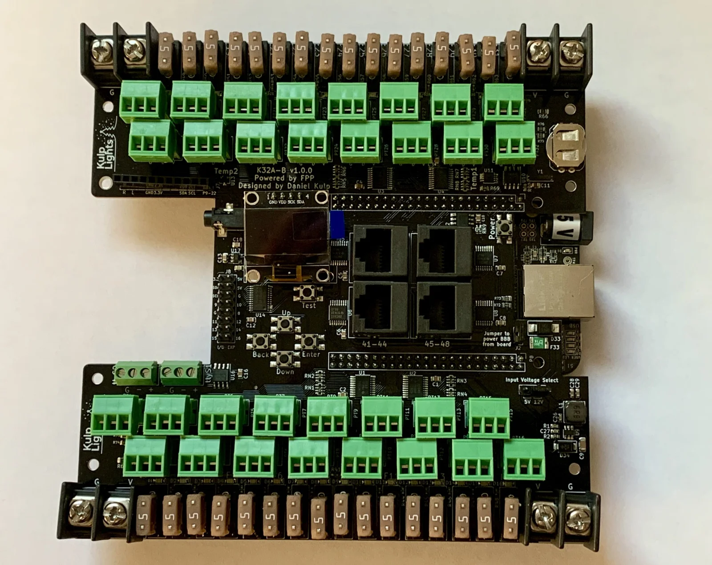
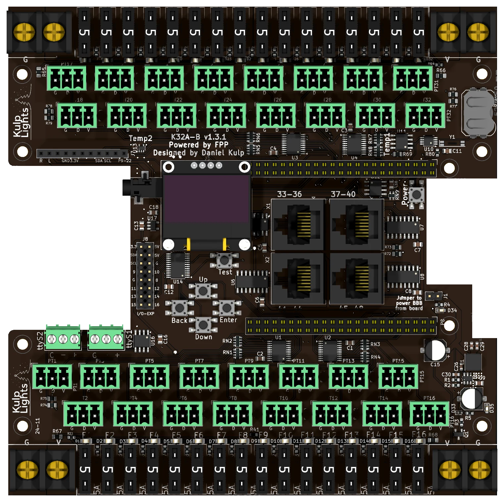

K32A-B¶
The K32A-B was a BeagleBone Black pixel controller: 32 fused pixel ports and 4 differential ports, for 48 strings in all, plus audio and two DMX outputs.

An early K32A-B (v1.0.0) with a BeagleBone Black fitted underneath. The current board differs in small details; the board map below shows it.
Retired
The K32A-B is no longer sold. This page is for the many boards still in use. Its successors are the PocketBeagle 2 K32, K32-Pro and K32-Max.
This page describes revision v1.3.1 (printed on the board as K32A-B v1.3.1), and notes where
earlier boards differ. See Board revisions.
How the K32A-B differs from the PocketBeagle 2 boards
- It needs a BeagleBone Black (or a compatible BeagleBone). See BeagleBone Black.
- Four power terminals, one per bank of eight ports. Only the bottom-right one runs the controller.
- Boards before v1.3 have an Input Voltage Select jumper and take 5 or 12 V only.
- The differential ports are send-only: smart receivers work in v1, v2 or V4 mode.
Specifications¶
| K32A-B | |
|---|---|
| Local pixel ports | 32 (PT1–PT32), 3-pin 3.5 mm pluggable |
| Port protection | 5 A mini-blade fuse per port, with a fuse-OK LED |
| Differential ports | 4 × RJ45 = 16 strings (33–48), send-only |
| Total strings | 48 |
| Power terminals | 4, one per bank of 8 ports |
| Voltage | v1.3 and later: 5–18 V. Earlier: 5 or 12 V, 12 V max. |
| DMX / serial | 2, RS-485 transmit, on 3-pin pluggable terminals (ttyS1, ttyS2) |
| Audio | stereo DAC, 3.5 mm line out, FM transmitter socket |
| Expansion port | none |
| Display & buttons | 128×64 OLED, Up / Down / Back / Enter / Test, Power |
| Real-time clock | yes, CR1220 backup cell |
| Temperature sensors | 2 (Temp1, Temp2) |
| Size | 149.9 × 149.9 mm (5.90 × 5.90 in), 9 mounting holes, 3.2 mm |
| FPP output | BBB48String |
| Requires | BeagleBone Black or compatible, FPP 9.5 or later |
Board map¶

The BeagleBone sits underneath the middle of the board, with its Ethernet jack in the notch in the right-hand edge.
Power¶
Four terminals, one in each corner. Each powers one bank of eight ports through their fuses. On every terminal G is the outer screw, nearer the corner, and V+ the inner one.
| Terminal | Marking | Powers |
|---|---|---|
| bottom left | G V |
ports 1–8 |
| bottom right | V G |
ports 9–16, and the BeagleBone and all the logic |
| top left | G V |
ports 17–24 |
| top right | V G |
ports 25–32 |
- The board won't start without power on the bottom-right terminal, even with the others powered.
- Each bank can run its own voltage, so 5 and 12 V pixels can share the board on different banks.
- v1.3 and later: 5–18 V on any terminal. Don't use 24 V supplies.
- Before v1.3: 5 or 12 V only, 12 V maximum. The 3-pin Input Voltage Select jumper, at the lower right, must match the supply on the bottom-right terminal: 5V for 5 V, 12V for 12 V.
- FPP shows the four voltages as VIN1 (ports 1–8), VIN2 (9–16), VIN3 (17–24) and VIN4 (25–32).
- On v1.3.1 two blue LEDs on the right-hand side show that the bottom-right terminal has power and that the 5 V supply is running.
- The terminals are rated 30 A. Use 10 or 12 AWG wire for heavily loaded banks.
Check polarity before you power up
The pixel ports aren't protected against a reversed supply: it goes straight through the fuses to that bank's ports and any pixels connected. From v1.3 the controller itself is protected.
See Power for supply sizing and safety.
Powering the BeagleBone: the "power BBB" jumper¶
The jumper marked Jumper to power BBB from board, on the right-hand side above the BeagleBone's Ethernet jack, connects the board's 5 V supply to the BeagleBone. It is fitted at the factory; leave it fitted. With it removed, the BeagleBone needs its own supply in its barrel jack. Never fit the jumper and plug a supply into the BeagleBone's barrel jack at the same time.
Pixel ports and fuses¶
The ports are in two blocks of sixteen, with the fuses along the outer edges. In each block the two rows are offset half a step:
| Row | Ports, left to right |
|---|---|
| top block, outer row | PT17 · PT19 · PT21 · PT23 · PT25 · PT27 · PT29 · PT31 |
| top block, inner row | PT18 · PT20 · PT22 · PT24 · PT26 · PT28 · PT30 · PT32 |
| bottom block, inner row | PT1 · PT3 · PT5 · PT7 · PT9 · PT11 · PT13 · PT15 |
| bottom block, outer row | PT2 · PT4 · PT6 · PT8 · PT10 · PT12 · PT14 · PT16 |
Each port is G D V (ground, data, +V), as printed beneath it. PT1 is FPP port 1, and so on. Each port can drive up to 800 pixels at 40 fps. See Pixel outputs.
Each port has its own 5 A mini-blade fuse: F1–F16 along the bottom edge and F17–F32 along the top, left to right. The LED beside each fuse lights when the fuse is good and the bank has power. See Power → Fuses.
Differential ports¶
The four jacks are in a 2 × 2 block in the middle of the board:
| left | right | |
|---|---|---|
| Top | 33-36 |
37-40 |
| Bottom | 41-44 |
45-48 |
Each jack carries four strings, with the standard pinout. The ports are send-only. Any standard differential receiver works, and smart receivers work in v1, v2 or V4 mode. Falcon V5 receivers also work, set to V4, but they can't send status back. See Differential ports.
DMX¶
The two DMX outputs are 3-pin pluggable terminals at the left, just above the bottom block of pixel
ports: ttyS2 on the left, ttyS1 on the right. Each is marked G − +, left to right:
G |
− |
+ |
|---|---|---|
| Ground (XLR pin 1) | Data − (XLR pin 2) | Data + (XLR pin 3) |
The outputs are transmit-only and can also drive Renard, LOR or Pixelnet through a suitable adapter. FPP sets up a disabled DMX output on each. See DMX / serial.
Audio and FM transmitter¶
The built-in PCM5102A stereo DAC drives the 3.5 mm line-out jack, which opens into the notch
in the left-hand edge. The 11-pin FM transmitter socket below the top block of ports
(R L GND 3.3V SDA SCL P9-22) takes the optional
Si4713 FM transmitter. See
Audio.
Other connectors¶
| Connector | Marking | Details |
|---|---|---|
| OLED | GND VDD SCK SDA |
Controls & display |
| Buttons | Up Down Back Enter, Test |
the menu buttons in a cross below the OLED, with Test above them to the right. Controls & display |
| Power button | Power |
right-hand side, above the Ethernet notch. Shuts down or restarts the BeagleBone; see Power button. There is no Boot button: use the BeagleBone's own. |
| GPIO / I²C | I/O-EXP |
2×8 header left of the buttons: 3.3 V, 5 V, GND, the I²C bus and nine spare lines on the button I/O expander, numbered 8–16 on the board. FPP lists them in GPIO Inputs as pca9675-7 to pca9675-15 (one lower than the board's numbers). They are 3.3 V, pull up weakly and can only sink current: use them for switches to ground. |
| RTC battery | coin-cell holder, top right | Clock |
FPP setup¶
When FPP detects the K32A-B it sets itself up from the board's EEPROM: the K32A-B pixel-string
layout (FPP's BBB48String output, with 100 pixels on each local port and none on the
differential ports), the built-in audio, the voltage and temperature sensors, the FM transmitter
plugin's settings, and two disabled DMX outputs on ttyS1 and ttyS2. Set the pixel counts and
start channels from xLights or the FPP Pixel Strings page. See
Configuring outputs.
Board revisions¶
| Revision | Changes |
|---|---|
| v1.0.0 | First release. Input Voltage Select jumper (5V / 12V). |
| v1.1.0, v1.1.1 | Over-voltage and over-current protection on the controller's supply. |
| v1.2 | Different regulator, clock and temperature chips, as parts shortages allowed. Still has the Input Voltage Select jumper. |
| v1.3 | Input Voltage Select jumper removed: a fixed 5 V regulator with reverse-polarity protection, 5–18 V. |
| v1.3.1 | Adds the two blue power LEDs. |
Dimensions & mounting¶
- 149.86 × 149.86 mm (5.90 × 5.90 in), 9 plated mounting holes, 3.2 mm, for M3 (or #4) screws.
- The BeagleBone hangs underneath the board, so the standoffs must be tall enough to clear it and its connectors.